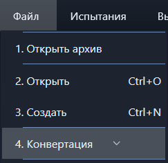
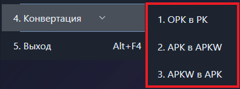
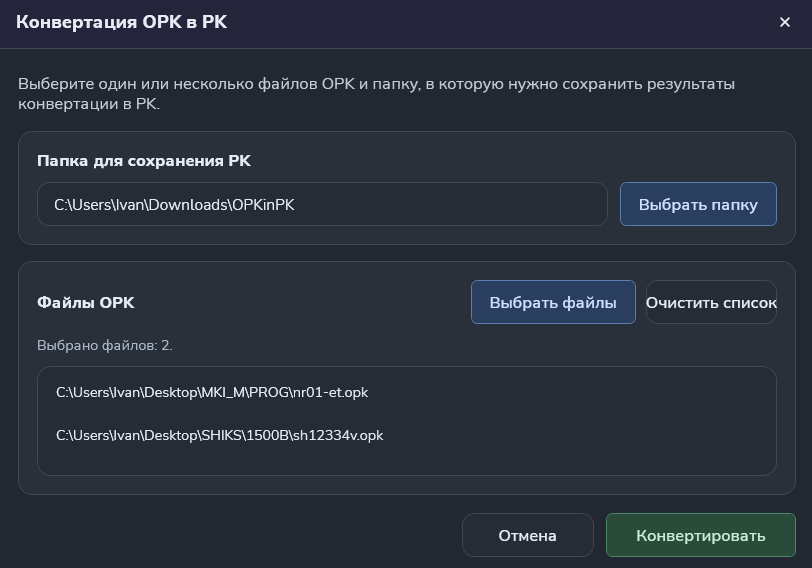
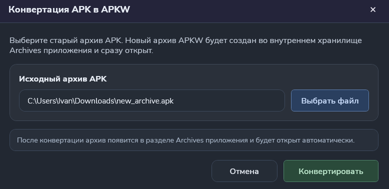
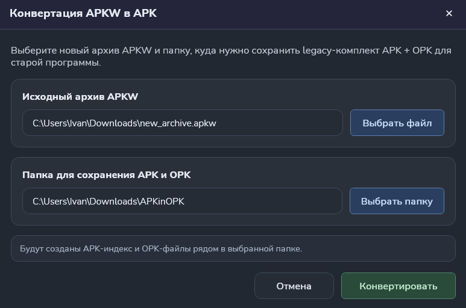

Функция "Конвертация"
Конвертация файлов старого формата в новый и наоборот.
Путь и вызов
Нахождение в программе
Верхнее меню → "Файл" → "Конвертация"На изображении показано нахождение данной функции в программе:

Действия после нажатия
После откроется выбор конвертации. Он показан на рисунке 2 в красном квадрате.

OPK в PK
При выборе конвертации OPK в PK откроется окно управления конвертацией, как на рисунок 3.
В окне указываем путь для сохранения конвертированных файлов. Также указываем файлы, необходимые для конвертации.

После успешной конвертации в программе выйдет сообщение об успешной конвертации и конвертированные файлы будут автоматически открыты в текстовом редакторе программы.
APK в APKW
При выборе конвертации APK в APKW откроется окно управления конвертацией, как на рисунок 4.

После успешной конвертации архив будет сохранен в программе и автоматически открыт.
APKW в APK
При выборе конвертации APK в APKW откроется окно управления конвертацией, как на рисунок 5.

После успешной конвертации архив будет сохранен в указанном месте. Также, вместе с ним по отдельности будут сохранены программы контроля с расширением *.opk.